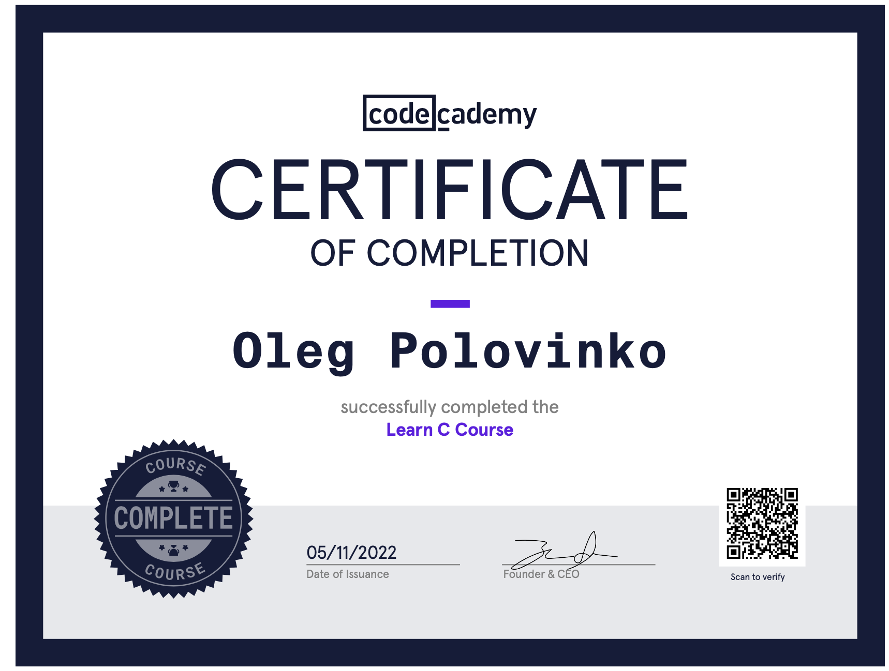

Contacts:
- Email: ospolovinko@gmail.com
- LinkedIn: https://www.linkedin.com/in/oleg-polovinko-10b95b172
- Telegram: https://t.me/rockstarhelge
Profile:
Entered RS-school to successfully complete and start my career as a programmer. All or nothing.
Therefore, I will try my best. Study at School 21 in Kazan at the same time.
I study everything new extremely quickly and nobody can put out my seniority to become a front-end programmer!
Skills:
- C
- Bash
- HTML5, CSS3
- JavaScript Basics
- Git, GitLab, GitHub
- Python Basics
- Adobe PS
Code example:
int main(int argc, char *argv[]) {
options flags = {0};
char template_buffer[256];
int error_flag = 0;
patterns_list *tmp =
options_parser(argc, argv, &flags, &template_buffer[0],
&error_flag);
if (argv[optind] != NULL) {
search_regex(argv, flags, tmp);
}
free_list(tmp);
return 0;
}
Courses:
Portfolio:
in/devMy CV in Markdown available here
Education:
- 2015-2019: Volgograd State Agrarian University - Bachelor of Agronomic Sciences
- September 2022 - now: School 21, Kazan - studying computer science
Languages:
- Ukrainian - Native
- Russian - Native
- English - Intermediate/Upper-intermediate